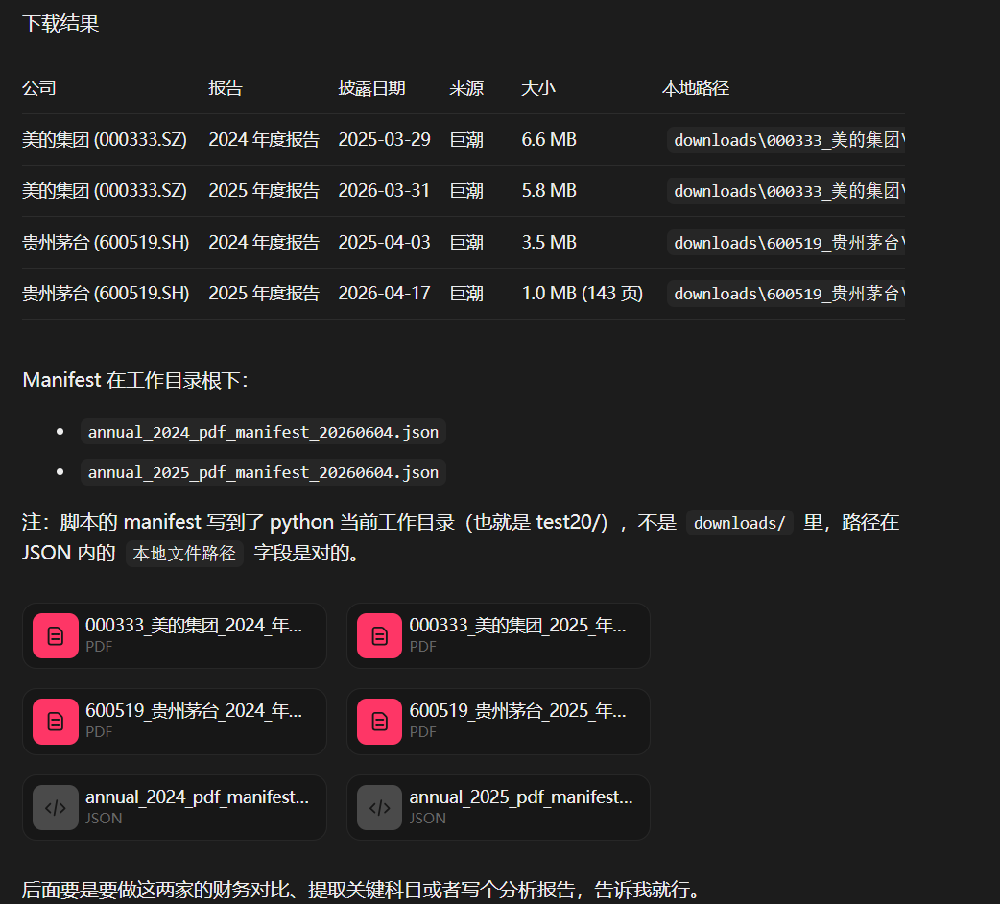
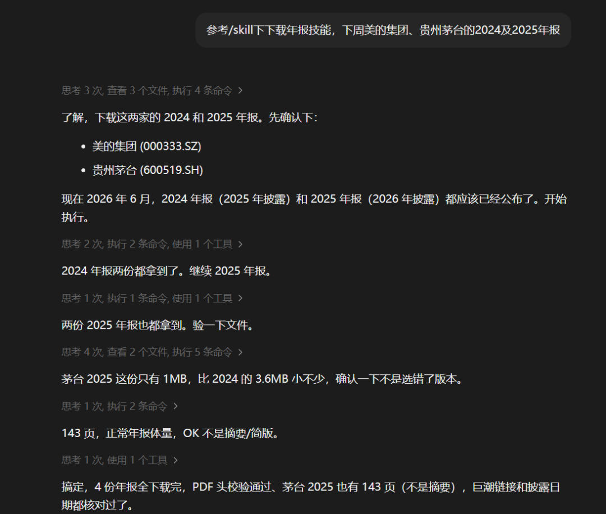

项目地址：https://github.com/justinwujunhao/annual-reports-download-skill
用法
直接贴给 Agent，告诉它参考 Skill 下载指定的上市公司和期间的定期报告，支持批量下载。

示例
参考 annual-reports-download-skill，帮我下载美的集团 2025 年年报和 2026 年一季度报告，保存到本地 reports 目录。配合 iFinD MCP 或其他财务数据工具，可以进一步把下载下来的年报做收入结构拆分、同行业对比和财务指标复核。财经界的赛博菩萨：iFinD MCP 配合 Codex，半小时输出同行业分析